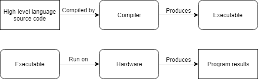
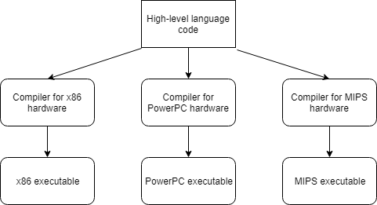

0.2 — Introduction aux programmes et aux langages de programmation
Les ordinateurs modernes sont incroyablement rapides, et ils ne cessent de gagner en vitesse. Cependant, les ordinateurs ont aussi des contraintes importantes : ils ne comprennent nativement qu'un ensemble limité d'instructions, et doivent recevoir des consignes exactes sur ce qu'ils doivent faire.
Un programme informatique est une suite d'instructions qui indique à un ordinateur d'effectuer certaines actions dans un ordre précis. Les programmes informatiques sont généralement écrits dans un langage de programmation, c'est-à-dire un langage conçu pour faciliter l'écriture d'instructions destinées aux ordinateurs. Il existe de nombreux langages de programmation différents, chacun répondant à un ensemble de besoins distinct. L'acte (et l'art) d'écrire un programme s'appelle la programmation. Nous reviendrons plus précisément sur la création de programmes en C++ dans les prochaines leçons de ce chapitre.
Lorsqu'un ordinateur exécute les actions décrites par les instructions d'un programme, on dit qu'il exécute (ou fait tourner, en anglais running ou executing) le programme. Un ordinateur ne commence pas à exécuter un programme tant qu'il n'en reçoit pas l'ordre. Cela nécessite généralement que l'utilisateur lance (ou exécute) le programme, bien que des programmes puissent aussi être lancés par d'autres programmes.
Les programmes sont exécutés sur le matériel (en anglais hardware) de l'ordinateur, c'est-à-dire l'ensemble des composants physiques qui constituent un ordinateur. Parmi les éléments matériels courants d'un appareil informatique typique, on trouve :
- Un CPU (processeur, unité centrale, souvent appelé le « cerveau » de l'ordinateur), qui exécute réellement les instructions.
- La mémoire, dans laquelle les programmes sont chargés avant leur exécution.
- Les périphériques interactifs (par exemple un écran, un écran tactile, un clavier ou une souris), qui permettent à une personne d'interagir avec un ordinateur.
- Les périphériques de stockage (par exemple un disque dur, un SSD ou une mémoire flash), qui conservent les informations (y compris les programmes installés) même lorsque l'ordinateur est éteint.
En revanche, le terme logiciel (en anglais software) désigne de manière générale les programmes présents sur un système, conçus pour être exécutés sur le matériel.
Dans l'informatique moderne, les programmes interagissent souvent avec bien plus que le matériel : ils interagissent aussi avec les autres logiciels du système (en particulier le système d'exploitation). Le terme plateforme désigne un ensemble compatible de matériel et de logiciels (système d'exploitation, navigateur, etc.) qui fournit un environnement dans lequel les logiciels peuvent s'exécuter. Par exemple, le terme « PC » est utilisé familièrement pour désigner la plateforme constituée d'un système d'exploitation Windows fonctionnant sur un processeur de la famille x86.
Les plateformes fournissent souvent des services utiles aux programmes qui s'y exécutent. Par exemple, une application de bureau peut demander au système d'exploitation de lui allouer un bloc de mémoire libre, de créer un fichier à un certain endroit ou de jouer un son. Le programme en cours d'exécution n'a pas besoin de savoir comment cela est réalisé concrètement. Si un programme utilise des capacités ou des services fournis par la plateforme, il devient dépendant de cette plateforme, et ne peut pas être exécuté sur d'autres plateformes sans modification. Un programme qui peut être facilement transféré d'une plateforme à une autre est dit portable. L'action de modifier un programme pour qu'il fonctionne sur une autre plateforme s'appelle le portage.
Maintenant que nous avons parlé des programmes, discutons des langages de programmation. Il ne s'agit pas seulement d'un cours d'histoire : nous allons aussi introduire une terminologie qui reviendra dans les leçons suivantes.
Langage machine
Le CPU d'un ordinateur est incapable de comprendre le C++. À la place, les CPU ne savent traiter que des instructions écrites en langage machine (ou code machine). L'ensemble de toutes les instructions en langage machine qu'un CPU donné peut comprendre s'appelle un jeu d'instructions (en anglais instruction set).
Voici un exemple d'instruction en langage machine : 10110000 01100001.
Chaque instruction est interprétée par le CPU comme une commande destinée à accomplir une tâche très précise, comme « comparer ces deux nombres » ou « copier ce nombre dans cet emplacement mémoire ». À l'époque où les ordinateurs venaient d'être inventés, les programmeurs devaient écrire leurs programmes directement en langage machine, ce qui était une tâche très difficile et longue.
La manière dont ces instructions sont organisées et interprétées dépasse le cadre de cette série de tutoriels, mais il est utile de noter quelques points.
Premièrement, chaque instruction est composée d'une suite de 1 et de 0. Chaque 0 ou 1 individuel s'appelle un chiffre binaire, ou bit en abrégé. Le nombre de bits d'une instruction en langage machine varie : par exemple, certains CPU traitent des instructions toujours longues de 32 bits, alors que d'autres CPU (comme ceux de la famille x86, que vous utilisez peut-être) ont des instructions dont la longueur peut varier.
Deuxièmement, chaque famille de CPU compatibles (par exemple x86, Arm64) possède son propre langage machine, et ce langage machine n'est pas compatible avec celui des autres familles de CPU. Cela signifie que des programmes en langage machine écrits pour une famille de CPU ne peuvent pas être exécutés sur des CPU d'une autre famille !
Contenu connexe
Une « famille de CPU » s'appelle formellement un « jeu d'instructions architectural » (en anglais instruction set architecture, abrégé « ISA »). Wikipédia propose une liste des différentes familles de CPU ici.
Langages d'assemblage
Les instructions en langage machine (comme 10110000 01100001) sont idéales pour un CPU, mais difficiles à comprendre pour un être humain. Puisque les programmes ont (du moins historiquement) été écrits et maintenus par des humains, il est logique que les langages de programmation soient conçus en fonction des besoins humains.
Un langage d'assemblage (souvent appelé simplement assembleur ou assembly) est un langage de programmation qui fonctionne essentiellement comme un langage machine plus lisible pour l'humain. Voici la même instruction que ci-dessus en assembleur x86 : mov al, 0x61.
Lecture facultative
Cette instruction illustre plusieurs des capacités qui rendent l'assembleur plus lisible que le langage machine.
- L'opération (ce que fait l'instruction) est identifiée par un court mnémonique (généralement un nom de 3 à 5 lettres).
movse comprend facilement comme le mnémonique de « move » (déplacer), une opération qui copie des bits d'un emplacement à un autre. - Les registres (emplacements mémoire rapides faisant partie du CPU lui-même) sont accédés par un nom.
alest le nom d'un registre précis d'un CPU x86. - Les nombres peuvent être spécifiés dans un format plus pratique. Les langages d'assemblage acceptent généralement à la fois les nombres décimaux (par exemple
97) et les nombres hexadécimaux (par exemple0x61).
Il est assez facile de comprendre que l'instruction d'assemblage mov al, 0x61 copie le nombre hexadécimal 0x61 dans le registre CPU al.
Comme les CPU ne comprennent pas l'assembleur, les programmes en assembleur doivent être traduits en langage machine avant de pouvoir être exécutés. Cette traduction est effectuée par un programme appelé un assembleur (en anglais assembler). Comme chaque instruction d'assemblage est généralement conçue pour correspondre à une instruction équivalente en langage machine, le processus de traduction est en général simple.
Tout comme chaque famille de CPU possède son propre langage machine, chaque famille de CPU possède aussi son propre langage d'assemblage (conçu pour être assemblé en langage machine de cette même famille). Il existe donc de nombreux langages d'assemblage différents. Bien que conceptuellement semblables, ils supportent des instructions différentes, utilisent des conventions de nommage différentes, etc.
Introduction aux langages de bas niveau
Les langages machine et les langages d'assemblage sont considérés comme des langages de bas niveau, car ils offrent une abstraction minimale par rapport à l'architecture de la machine. En d'autres termes, le langage de programmation lui-même est adapté à l'architecture de jeu d'instructions sur laquelle il sera exécuté.
Les langages de bas niveau présentent un certain nombre d'inconvénients notables :
- Les programmes écrits dans un langage de bas niveau ne sont pas portables. Comme un langage de bas niveau est adapté à une architecture de jeu d'instructions précise, les programmes écrits dans ce langage le sont aussi. Porter de tels programmes vers d'autres architectures est généralement non trivial.
- Écrire un programme dans un langage de bas niveau exige une connaissance détaillée de l'architecture elle-même. Par exemple, l'instruction
mov al, 061hsuppose de savoir quealdésigne un registre du CPU disponible sur cette plateforme précise, et de comprendre comment travailler avec ce registre. Sur une autre architecture, ce registre pourrait avoir un autre nom, des limitations différentes, ou ne pas exister du tout. - Les programmes de bas niveau sont difficiles à comprendre. Bien que les instructions d'assemblage individuelles soient assez compréhensibles, il peut rester difficile de déduire ce que fait réellement une section de code assembleur. Et comme les programmes en assembleur nécessitent beaucoup d'instructions pour accomplir des tâches même simples, ils ont tendance à être assez longs.
- Il est difficile d'écrire des programmes en assembleur d'une complexité significative, car le langage ne fournit que des capacités primitives. Le programmeur doit implémenter lui-même tout ce dont il a besoin.
Le principal avantage des langages de bas niveau est qu'ils sont rapides. L'assembleur est encore utilisé aujourd'hui pour les sections de code critiques en termes de performances. Il sert aussi dans quelques autres cas, dont l'un sera évoqué dans un instant.
Introduction aux langages de haut niveau
Pour répondre à beaucoup des inconvénients évoqués ci-dessus, de nouveaux langages de programmation « de haut niveau » ont été développés, comme C, C++, Pascal (et plus tard, des langages comme Java, JavaScript ou Perl).
Voici la même instruction que ci-dessus en C/C++ : a = 97;.
Tout comme les programmes en assembleur (qui doivent être assemblés en langage machine), les programmes écrits dans un langage de haut niveau doivent être traduits en langage machine avant de pouvoir être exécutés. Il existe deux manières principales de le faire : la compilation et l'interprétation.
Les programmes C++ sont généralement compilés. Un compilateur (en anglais compiler) est un programme (ou un ensemble de programmes) qui lit le code source d'un langage (généralement un langage de haut niveau) et le traduit dans un autre langage (généralement un langage de bas niveau). Par exemple, un compilateur C++ traduit le code source C++ en code machine.
Lecture facultative
La plupart des compilateurs C++ peuvent aussi être configurés pour générer du code assembleur. C'est utile lorsqu'un programmeur veut voir quelles instructions précises le compilateur génère pour une section du programme.
Le code machine produit par le compilateur peut ensuite être empaqueté dans un fichier exécutable (contenant des instructions en langage machine) qui peut être distribué à d'autres personnes et lancé par le système d'exploitation. Notamment, l'exécution du fichier exécutable ne nécessite pas que le compilateur soit installé.
Au début, les compilateurs étaient rudimentaires et produisaient du code assembleur ou machine lent et non optimisé. Cependant, au fil des années, les compilateurs sont devenus très performants pour produire du code rapide et optimisé, et dans certains cas ils peuvent faire un meilleur travail que les humains !
Voici une représentation simplifiée du processus de compilation :

Par ailleurs, un interpréteur (en anglais interpreter) est un programme qui exécute directement les instructions du code source sans qu'il soit nécessaire de les compiler au préalable. Les interpréteurs sont généralement plus souples que les compilateurs, mais moins efficaces à l'exécution, car le processus d'interprétation doit être refait à chaque exécution du programme. Cela signifie aussi que l'interpréteur doit être installé sur chaque machine où un programme interprété sera exécuté.
Voici une représentation simplifiée du processus d'interprétation :
Lecture facultative
Une bonne comparaison des avantages des compilateurs et des interpréteurs se trouve ici.
Un autre avantage des programmes compilés est que leur distribution ne nécessite pas de distribuer le code source. Dans un environnement non open source, c'est important pour la protection de la propriété intellectuelle (PI).
La plupart des langages de haut niveau peuvent être soit compilés, soit interprétés. Traditionnellement, les langages de haut niveau comme C, C++ et Pascal sont compilés, alors que les langages de « script » comme Perl et JavaScript tendent à être interprétés. Certains langages, comme Java, utilisent un mélange des deux. Nous explorerons plus en détail les compilateurs C++ dans peu de temps.
Les avantages des langages de haut niveau
Les langages de haut niveau portent ce nom parce qu'ils offrent un haut niveau d'abstraction par rapport à l'architecture sous-jacente.
Prenons l'instruction a = 97;. Cette instruction permet de stocker la valeur 97 quelque part en mémoire, sans avoir besoin de savoir exactement où cette valeur sera placée, ni quelle instruction en langage machine précise le CPU doit utiliser pour la stocker. En fait, il n'y a absolument rien de spécifique à une plateforme dans cette instruction. C'est le compilateur qui fait tout le travail pour déterminer comment cette instruction C++ se traduit en code machine propre à la plateforme.
Les langages de haut niveau permettent aux programmeurs d'écrire des programmes sans connaître grand-chose de la plateforme sur laquelle ils seront exécutés. Cela rend non seulement les programmes plus faciles à écrire, mais aussi nettement plus portables. Si nous faisons attention, nous pouvons écrire un seul programme C++ qui se compilera sur toutes les plateformes disposant d'un compilateur C++ ! Un programme conçu pour fonctionner sur plusieurs plateformes est dit multiplateforme (en anglais cross-platform).

Pour les lecteurs avancés
Voici une liste partielle des éléments qui peuvent limiter la portabilité de votre code C++ :
- De nombreux systèmes d'exploitation, comme Microsoft Windows, proposent des fonctionnalités propres à la plateforme que vous pouvez utiliser dans votre code. Celles-ci peuvent rendre beaucoup plus facile l'écriture d'un programme pour un système d'exploitation spécifique, ou offrir une intégration plus poussée avec ce système qu'il ne serait autrement possible.
- De nombreuses bibliothèques tierces ne sont disponibles que sur certaines plateformes. Si vous en utilisez une, vous serez limité aux plateformes prises en charge par cette bibliothèque.
- Certains compilateurs prennent en charge des extensions spécifiques au compilateur, c'est-à-dire des fonctionnalités disponibles uniquement dans ce compilateur. Si vous les utilisez, vos programmes ne pourront pas être compilés par d'autres compilateurs qui ne prennent pas en charge les mêmes extensions, sans modification. Nous en reparlerons plus tard, une fois que vous aurez installé un compilateur.
- Dans certains cas, le langage C++ laisse le compilateur déterminer comment quelque chose doit se comporter. Nous en discutons davantage dans la leçon 1.6 -- Variables non initialisées et comportement indéfini, sous « comportement défini par l'implémentation ».
Si vous ne visez qu'une seule plateforme, la portabilité peut ne pas avoir tant d'importance. Mais de nombreuses applications aujourd'hui ciblent plusieurs plateformes afin d'élargir leur audience. Par exemple, une application mobile voudra probablement cibler à la fois iOS et Android.
Même si la portabilité ne semble pas utile au départ, de nombreuses applications initialement destinées à une seule plateforme (par exemple PC) ont choisi de se porter vers d'autres plateformes (par exemple Mac et diverses consoles) après avoir connu un certain succès et suscité un intérêt. Si vous ne pensez pas à la portabilité dès le début, le portage de votre application sera plus laborieux plus tard.
Dans ces tutoriels, nous éviterons autant que possible le code spécifique à une plateforme, afin que nos programmes fonctionnent sur toute plateforme disposant d'un compilateur C++ moderne.
Les langages de haut niveau présentent également d'autres avantages :
- Les programmes écrits dans un langage de haut niveau sont plus faciles à lire, à écrire et à apprendre, car leurs instructions ressemblent davantage à la langue naturelle et aux mathématiques que nous utilisons au quotidien. Dans de nombreux cas, les langages de haut niveau nécessitent moins d'instructions que les langages de bas niveau pour accomplir les mêmes tâches. Par exemple, en C++ vous pouvez écrire
a = b * 2 + 5;en une seule ligne. En assembleur, cela demanderait 4 à 6 instructions différentes. Cela rend les programmes écrits avec des langages de haut niveau plus concis, donc plus faciles à comprendre. - Les langages de haut niveau incluent généralement des capacités supplémentaires qui facilitent les tâches de programmation courantes, comme demander un bloc de mémoire ou manipuler du texte. Par exemple, une seule instruction suffit pour déterminer si les caractères « abc » existent dans un grand bloc de texte (et, le cas échéant, combien de caractères doivent être examinés avant de trouver « abc »). Cela peut réduire considérablement la complexité et les délais de développement.
Nomenclature
Bien que le C++ soit techniquement considéré comme un langage de haut niveau, les langages plus récents (par exemple les langages de script) offrent un niveau d'abstraction encore plus élevé. Par comparaison, le C++ est donc parfois qualifié à tort de « langage de bas niveau ».
Note de l'auteur
Aujourd'hui, le C++ serait probablement plus justement décrit comme un langage de niveau intermédiaire. Cela met toutefois en lumière l'un des points forts du C++ : il offre souvent la possibilité de travailler à différents niveaux d'abstraction. Vous pouvez choisir de travailler à un niveau plus bas pour gagner en performance et en précision, ou à un niveau plus élevé pour plus de confort et de simplicité.
Règles, bonnes pratiques et avertissements
Au fil de ces tutoriels, nous mettrons en évidence de nombreux points importants dans les trois catégories suivantes :
Règle
Les règles sont des instructions que vous devez suivre, imposées par le langage. Ne pas respecter une règle empêchera généralement votre programme de fonctionner.
Bonne pratique
Les bonnes pratiques sont des choses que vous devriez faire, car cette façon de procéder est soit conventionnelle (idiomatique), soit recommandée. Autrement dit, soit tout le monde fait ainsi (et si vous faites autrement, vous ferez quelque chose auquel les gens ne s'attendent pas), soit c'est généralement supérieur aux alternatives.
Avertissement
Les avertissements sont des choses que vous ne devriez pas faire, car elles conduisent généralement à des résultats inattendus.
Source originale : https://www.learncpp.com/cpp-tutorial/introduction-to-programming-languages/